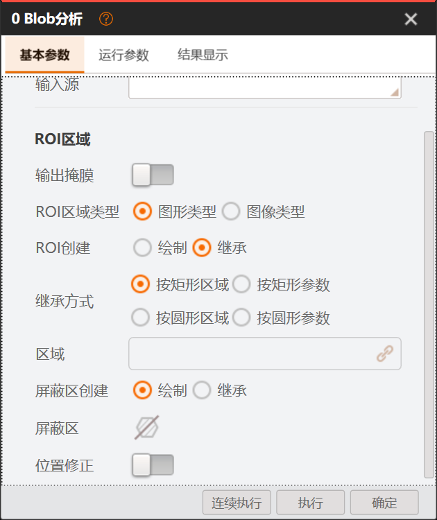
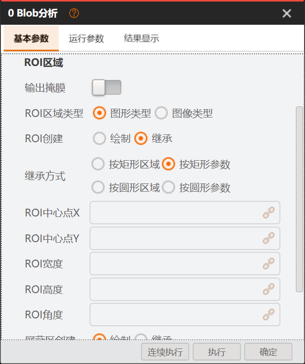
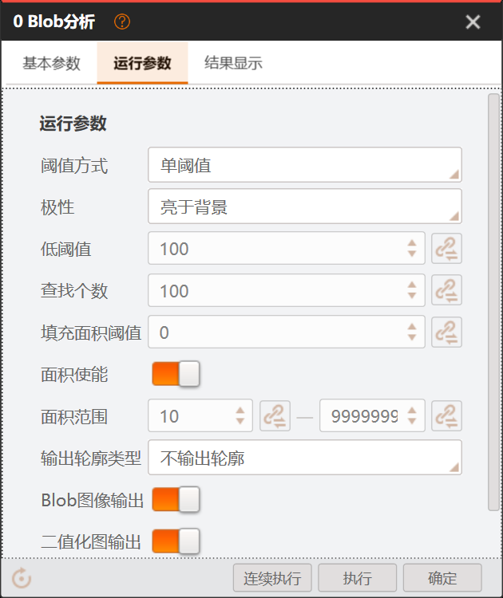
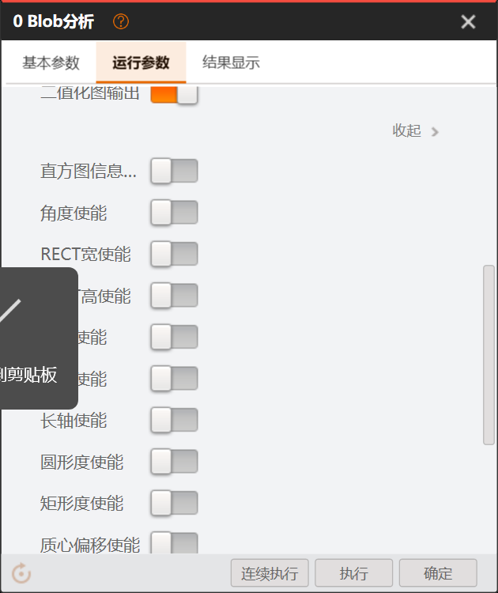
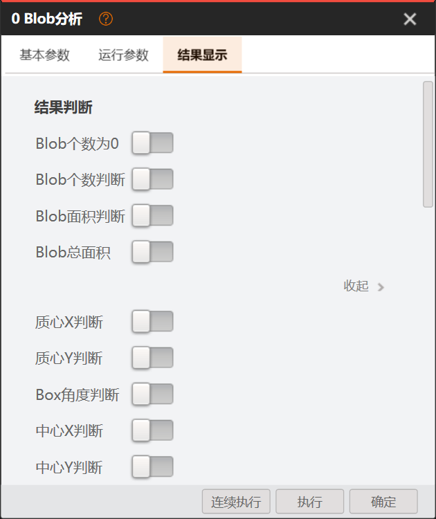
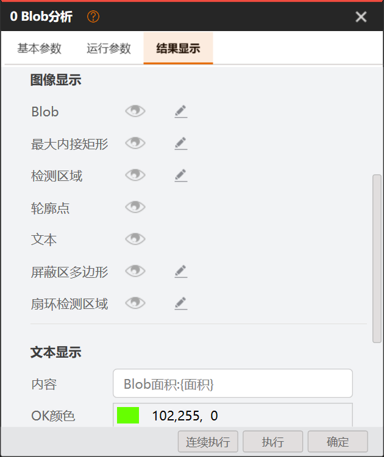
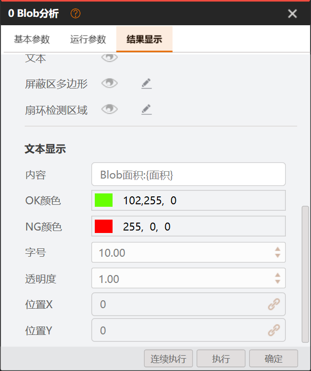

◉ SunEyeVision
Blob编辑工作区 · 方案示意图像模块结果
⊞ ⊕ ⊖ 1:1
64 × 64 · 两个白色目标可拖动矩形，再点执行看示意结果；形状/遮罩可预览；数值结果只演示矩形与全图
图像源（1 / 1）示例1
当前结果历史结果帮助
数量 1总面积 16 px²演示结果
| 序号 | 面积 | 中心X | 中心Y | 圆度 | 矩形度 |
|---|---|---|---|---|---|
| 1 | 16 | 6.5 | 6.5 | — | — |
● 演示就绪 · 目标面积16与25；不执行HALCON迁入资源的HTML预览 · 非WPF运行结果
先审核职责与界面，再实施和验收
| 序号 | 面积 | 中心X | 中心Y | 圆度 | 矩形度 |
|---|---|---|---|---|---|
| 1 | 16 | 6.5 | 6.5 | — | — |
原图直接读取本项目控件资源，不另画替代图。WPF模板规则转成浏览器CSS，交互由HTML演示；它不是WPF程序截图，不代表迁移验收通过。


| 部件 | 对应迁入对象 | 本次呈现和边界 |
|---|---|---|
| 输入源下拉 | SourceComboBoxes.xaml / ComboBox样式 查看迁入文件 | 原三角图、选项行、鼠标/选中态；候选仍是演示数据 |
| 开关与单选 | SourceBooleanToggle / NormalRadioButton 查看迁入文件 | 原开关及单选图片；开关一行、参数下一行 |
| 常量 / 订阅 | EditLinkButton / NativeLinkButton 查看迁入文件 | 原关联/编辑切换图片；本地值与来源两态、取消保留草稿 |
| 数值与范围 | NumericControl / SliderArrange / SliderArrangeFloat 查看迁入文件 | 按原源码：聚焦弹出、文本失焦提交、拖动松手通知、轨道按步长增减；双端按中点分区且不交叉 |
| 眼睛与编辑 | eyeToggleButton / NativeDisplayPopupButton 查看迁入文件 | 原显隐/编辑图标，控制示意叠加层及样式弹窗 |
| 页签与底部按钮 | TopTabItemStyle / Orange_ButtonStyle 查看迁入文件 | 按原模板对应规则呈现选中、悬停与三按钮布局 |
| ROI及颜色组合 | RoiSelectControl / ROIStack / VmColorPicker / ImageViewConfig_subContent 查看迁入文件 | 预览含就地样式面板及默认/更多色板；真实ColorField已接原色板、页签及高级算法，尚未运行验收。真实图形样式父层仍待从modal重组为就地四行面板；复杂ROI图标仍为示意 |
建议审核：依次检查输入源下拉、ROI绘制/继承、运行参数常量/订阅、数值聚焦与双端滑条、判断开关展开、眼睛显隐、图形样式的OK/NG颜色及文本默认/更多色板。颜色选择修改私有草稿，窗口取消回退。VM实际截图仍在原导航保留。
产品现状：新候选仍有跨组引用和依赖构建错误；本页不能代替Release运行、HALCON或人工验收。复杂ROI工具栏仍为示意，未称整体外观验收通过。
按职责与组合层次决定去留。可运行证明功能基础，不直接证明旧类细分与新架构一致；提取复用不等于整类保留，重组不等于从零重写。
| 层次 | 现有基础 | 明确处理 |
|---|---|---|
| 基础输入部件 | NumericUpDown、RangeInputControl已有单/双滑条与焦点代码；不因新架构全部废弃。 | 对照VM NumericControl/SliderArrange，提取核实的输入、微调与焦点逻辑，修正模板和状态。现有命名/注释不等于实际视觉已达标。 |
| 参数组合 | 旧ConfigSetting把BindingType、BindingSource、Value和来源列表等组合；新DeclaredFieldEditor用常量/引用草稿，但呈现是普通控件。 | 重做组合接口和模板，复用新草稿/校验逻辑；以ConstantSetting/ReferenceSetting/UnsetSetting表达，不能把旧字符串来源带回新合同。 |
| 输入源 | VM EnumerationG整行ComboBox；逆向本地VisionUi已有模板/资源。 | 作为样式与交互基准核收、适配到本方宿主候选；不引用逆向工程DLL，不等同参数订阅树。 |
| 来源订阅 | 旧ParamBinding有字符串BindingSource、AvailableDataSource和全局变量策略。 | 树展示和选中反馈可提取；候选、类型检查、稳定引用由宿主/新合同提供。删除旧来源解释职责，不让控件解析执行来源。 |
| 范围和开关 | 旧RangeInputControl有核心双滑条；用户VM截图明确开关一行、范围下一行且部分不可订阅。 | 独立基础范围、订阅组合和显隐布局；字段声明决定是否可绑定/是否有滑条，不能每个范围强套同一业务控件。 |
| ROI与结果显示 | 已有几何、宿主交互作用域和结果消费能力；VM以ROI组合和显示对象行呈现。 | 复用核实的几何与作用域，重组视图和绑定适配；不保留旧Manager对全局画布的控制权。对象列表按实际能力配眼睛/编辑。 |
| 窗口组装 | VM参数根→页组→字段模板；本方现有打开、草稿、执行、释放链已跑通，但字段页面直接生成五页。 | 复用打开与事务链，重组为三页/组/行/条件/折叠；工具只声明能力，通用UI按声明组装。 |
| 工程组织 | Plugin.Wpf目前只依赖Plugin.Contracts；旧Plugin.SDK控件依赖旧Execution.Parameters及日志等。 | 拟在Plugin.Wpf分Controls基础部件、Fields/Templates参数组合、Themes资源；UI宿主保留候选/草稿/ROI接线，Definition/Runtime不引入WPF。迁移前拆旧SDK依赖，不整包搬运。 |
建议工程分层：Plugin.Wpf/Controls（基础部件）→Fields/Templates（参数组合）→Themes（资源）；UI宿主负责候选、私有草稿、ROI和执行接线。目录为拟调整，不是声称已迁移。
三页对应“输入与区域、计算与筛选、判定与显示”。页内内容随真实算法能力变化。图像处理和形态学不能仅因旧Blob已有实现就默认留在Blob里。
| 问题 | 实际证据 | 推荐处理 |
|---|---|---|
| 图像预处理 | 本方BlobSession在阈值前执行滤波/均衡；VM当前Blob声明未见对应可配置组。 | 移到上游专用工具；Blob接收其输出图像。当前预览不在Blob参数里保留该组，属于待审核调整。 |
| 形态学 | 当前本方对阈值后的Region做形态学，不是对原始灰度先滤波。 | 推荐“上游分割→专用形态学→Blob不二值化”。VM XML提供该模式依据；本方需新增严格二值输入并调整形态学固定128阈值，不能原样接替或挪用ROI输入。 |
| 阈值参数 | 当前HALCON仅区间内/外；VM XML有不二值化、单/双阈值及更多模式，native公式未完全取证。 | 预览体现拟重构单/双阈值与拟新增不二值化，参数随模式显隐；自动/软阈值暂不纳入，不把MaxValue当二值白色值。 |
| VM额外项 | VM声明有软阈值相关、填孔、4/8连通、最大内接矩形等；批准FD05未实现其中若干能力。 | 本轮不放假开关。按业务需要决定补算法或保持未纳入；当前8连通固定说明，不伪造4连通可选。 |
| 输出图像 | 灰度是分割前图；二值图是形态学后、筛选前；最终Region是筛选/排序/限数后。 | 输出名称和显示明确区分。流程拆分后须重新核定二值图生产者及来源，不能静默改变原口径。 |
| 测量与统计 | 当前BlobSchema有面积/周长/质心/圆度/矩形度/边框；角度/长短轴没有相同的现行标量输出合同。 | 表格只显示真实声明，不用0补假列。周长等同名特征仍须核公式/单位；本HTML未计算圆度与矩形度，显示“—”。 |
| 比例及边界 | FD06白像素比例分母为整幅图；单contour有损，boundary/Region承载多环和孔洞。 | 说明统计阶段与分母；流程变更不得暗改字段含义。需要新口径时独立定义并审核。 |
VM通用路线有源码与恢复XAML；实际Blob运行时窗口类型、字段模板key和活动资源闭包尚未实机确认。本方修正推荐不是VM原始工程目录。
ProcedureConfigControl.OpenParamsTabControlGetExternTabWin → ParamsTabControlBaseParamsConfigControlBase → AlgorithmTabRoot + XML/GroupParamsTabUserControl → ParamListViewDisplayType → ParamUserControl → UserTempConverterApps.XmlUI → Apps.Style / Apps.PcUIColorFun / Localization / BottomExcuteButtons / ROIPartUI / ClosedMainWindowViewModel → NodeOpenDecisionChainToolConfigurationEditors → DeclaredToolConfigurationControlProductionEditorContext / IConfigurationFieldProviderDeclaredFieldsView / DeclaredFieldEditorRoiViewportEditScope / DefaultDebugWindow| 预览内容 | 可定位依据 | 不能据此宣称 |
|---|---|---|
| 三页及分组 | 安装原件IMVSBlobFindModuAlgorithmTab.xml、Group.xml；ParamsTabUserControl.xaml。 | 不能证明VM每个运行实例都走通用壳。 |
| 行/开关/ROI组合 | ParamUserControlDataTemplate、LeftRightControl、RoiSelectControl、BoxROIStack及用户VM截图。 | 本HTML/SVG是呈现推荐，不是恢复的WPF，不证明手势等价或逐像素相同。 |
| 参数与输出 | BlobSettings、BlobSession、BlobOutput、BlobSchema及批准FD05–07；最新用户要求重审算法职责。 | 预处理/形态学已移到上游专用工具；不宣称VM native内部不存在处理。 |
| 主题资源 | Apps.Style、ColorFun、外置ColorStyle1/2/3和语言配置；补证资源身份记录。 | 磁盘主题不等于运行态主题；活动模板资源逐键闭包和像素仍未核收。 |
| 示意交互 | 浏览器内合成两个白色方块，面积16/25；可拖矩形、修改范围、点选示例行。 | 不执行真实HALCON；圆度/形态学/非矩形/继承与生产保存没有模拟成产品通过。 |
按新职责分组，VM控件、模板、组合链是依据，不是复制旧类结构。退出旧类后功能仍由目标承接。部分源码、模板与原图已迁入；31类旧消费者的完整退出与本次构建尚未通过，不按清单文字宣称完成。
| 旧类/职责 | VM对应方式 | 去留与功能承接 | 文件组织（拟） |
|---|---|---|---|
| LabeledControl 基础输入：只负责标签、输入列、帮助与错误位置 | 控件/模板 LeftRightControl.xaml:12 | 重组 标签/对齐规则 退出：旧类业务布局分支 | Fields/Templates/FieldRow.xaml 完整源、消费者与退出门 → |
| NumericUpDown 基础输入：值、精度、步进、数值校验与单滑条 | 控件 NumericControl.xaml:2；SliderArrange.xaml:156 | 提取复用 步进/精度/焦点/滑条逻辑，逐态修模板 退出：旧SDK日志/常量与主题依赖 | Controls/NumericUpDown.cs + Themes/Numeric.xaml 完整源、消费者与退出门 → |
| RangeSlider 基础输入：仅双端拖动，不存来源或业务判定 | 组合链 SliderArrange.xaml:156；paramusercontroldatatemplate.xaml:576 | 提取复用 双端夹限与拖动 退出：参数/订阅和作用域职责不得下沉 | Controls/RangeSlider.cs 完整源、消费者与退出门 → |
| RangeInputControl 基础输入：上下界数值与双滑条组合 | 模板/组合链 NumericControl.xaml:2；paramusercontroldatatemplate.xaml:576；paramusercontroldatatemplate.xaml:822 | 提取复用 上下界同步、焦点与弹层生命周期 退出：订阅归字段组合，不塞基础范围控件 | Controls/RangeInputControl.cs + Themes/Range.xaml 完整源、消费者与退出门 → |
| ToggleSwitch 基础输入：布尔输入；不自作业务显隐 | 控件/模板 paramusercontroldatatemplate.xaml:63 | 提取复用 布尔绑定/事件 退出：旧圆角和尺寸不默认保留，按VM图修资源 | Controls/ToggleSwitch.cs + Themes/Boolean.xaml 完整源、消费者与退出门 → |
| ColorPicker 基础输入：纯取色值与颜色转换 | 控件 ColorPickerControlView.xaml:2 | 提取复用 取色/颜色转换及确定取消 退出：工具语义与旧主题管理依赖 | Controls/ColorPicker.cs + Themes/Color.xaml 完整源、消费者与退出门 → |
| ColorSelector 基础输入：色块/RGB文本与取色弹层 | 模板/组合链 paramusercontroldatatemplate.xaml:2608；ColorPickerControlView.xaml:2 | 重组 ColorPicker取色基础 退出：旧选择器类与显示专用颜色类不得重复存颜色 | Fields/Templates/ColorField.xaml 完整源、消费者与退出门 → |
| ConfigSetting 字段模板：按类型/模式选择字段模板 | 模板/组合链 ParamUserControl.xaml.cs:12；paramusercontroldatatemplate.xaml:550；paramusercontroldatatemplate.xaml:576；paramusercontroldatatemplate.xaml:63；paramusercontroldatatemplate.xaml:2608 | 重组 DeclaredFieldEditor新草稿/校验/非法原文 退出：旧BindingType/BindingSource万能参数壳 | Fields/DeclaredFieldEditor.cs + Templates/ScalarField.xaml/RangeField.xaml 完整源、消费者与退出门 → |
| ParamBinding 字段模板：展示来源关系并请求宿主选择 | 模板/组合链 paramusercontroldatatemplate.xaml:255；paramusercontroldatatemplate.xaml:550 | 重组 树展示、候选投影与选中反馈 退出：旧字符串解释、全局变量枚举和执行解析 | Fields/ReferenceSelectionControl.cs + Templates/ReferenceField.xaml 完整源、消费者与退出门 → |
| ParamBindingBase 字段模板：旧来源/错误基类拆成宿主服务和局部提示 | 组合链 paramusercontroldatatemplate.xaml:255；ParamUserControl.xaml.cs:12 | 删除 有用错误提示由FieldRow承接；类型/数量/索引按新合同验证 退出：删除旧万能基类设计，不新建同形继承树 | Fields/Templates/FieldRow.xaml；UI宿主来源服务 完整源、消费者与退出门 → |
| ImageSourceSelector 字段模板：IMAGE输入源整行下拉 | 模板/组合链 Group.xml:9；paramusercontroldatatemplate.xaml:846 | 重组 宿主候选/当前引用；本地还原ComboBox模板与三角图 退出：原链形订阅框替代图像下拉的误配 | Fields/SourceSelectionField.cs + Templates/ImageSourceField.xaml 完整源、消费者与退出门 → |
| GraphicsDisplayEditorControl 字段模板：对象可见性、可编辑能力和局部样式 | 模板/组合链 paramusercontroldatatemplate.xaml:2544 | 重组 已有显示设置草稿与有限输出能力 退出：独立图形Tab和每项统一编辑按钮 | Fields/Templates/DisplayObjectField.xaml 完整源、消费者与退出门 → |
| TextDisplayEditorControl 字段模板：内容、OK/NG颜色、字号、透明度和位置字段组合 | 模板/组合链 paramusercontroldatatemplate.xaml:2601；paramusercontroldatatemplate.xaml:2608；paramusercontroldatatemplate.xaml:550 | 重组 文本配置值与校验 退出：独立整页类/重复参数存储 | Fields/Templates/TextDisplayGroup.xaml 完整源、消费者与退出门 → |
| DispItemColorControl 字段模板：图形颜色字段 | 模板/组合链 paramusercontroldatatemplate.xaml:2544；ColorPickerControlView.xaml:2 | 删除 颜色值由统一ColorField承接 退出：删除图形专用颜色壳，保留业务显示值 | Fields/Templates/ColorField.xaml（共用） 完整源、消费者与退出门 → |
| DispTextColorControl 字段模板：文本OK/NG颜色字段 | 模板 paramusercontroldatatemplate.xaml:2608；paramusercontroldatatemplate.xaml:2601 | 删除 两种业务颜色值和规则仍保留 退出：删除文字专用颜色壳 | Fields/Templates/ColorField.xaml（共用） 完整源、消费者与退出门 → |
| JudgmentEditorControl 字段模板：判定开关及条件范围；不计算判定 | 模板/组合链 IMVSBlobFindModuAlgorithmTab.xml:1488；paramusercontroldatatemplate.xaml:63；paramusercontroldatatemplate.xaml:576；paramusercontroldatatemplate.xaml:822 | 重组 Enabled/Min/Max与顺序组别投影 退出：独立判定编辑器类由字段组替代 | Fields/Templates/JudgmentGroup.xaml；Blob.Runtime保留判定 完整源、消费者与退出门 → |
| RoiEditorControl ROI交互：局部形状、几何参数和编辑意图 | 控件/模板/组合链 RoiSelectControl.xaml:2；BoxROIStack.xaml:2 | 重组 现RegionGeometryEditor/RoiGeometryEditing几何 退出：旧控件持画布与手势总控职责 | Regions/RegionGeometryEditor.cs + Templates/RoiField.xaml 完整源、消费者与退出门 → |
| RoiEditorManagerControl ROI交互：旧检测/屏蔽协调器拆给宿主独占交互范围 | 组合链 RoiSelectControl.xaml:2；VMControls.WPF.ParamsConfigControlBase.cs:164；ParamsConfigWithRenderControlBase.xaml:2 | 删除 现RoiViewportEditScope/受限IRoiEditViewport承接 退出：旧Manager持全局Canvas/清主结果/接窗口全生命周期 | UI/Services/Editing/Regions/RoiViewportEditScope.cs 完整源、消费者与退出门 → |
| RoiSubscribePanel ROI交互：绘制/继承、几何对象/成员及像素区域分开 | 模板/组合链 RoiSelectControl.xaml:2；paramusercontroldatatemplate.xaml:255 | 重组 本地底稿、模式和稳定引用 退出：独立面板第二存储和旧字符串选择链 | Regions/Templates/RoiSourceField.xaml；UI/RegionSources适配 完整源、消费者与退出门 → |
| ShapeToolBar ROI交互：形状命令选择，不拥有执行 | 控件/模板组合 RoiSelectControl.xaml:2 | 重组 形状素材与已核命令意图 退出：旧ToolBar/ToolItem双份选中状态 | Regions/Templates/RoiShapeSelector.xaml 完整源、消费者与退出门 → |
| DrawingParameterPanel ROI交互：按形状显示几何参数并回填同一草稿 | 模板/组合链 BoxROIStack.xaml:2；RoiSelectControl.xaml:2 | 重组 几何数值投影与字段校验 退出：旧形状各页重复状态和对画布直写 | Regions/Templates/GeometryFields.xaml 完整源、消费者与退出门 → |
| ToolBarControl ROI交互：局部工具选择；不是主窗口工具栏 | 模板/组合链 RoiSelectControl.xaml:2；ParamUserControl.xaml.cs:12 | 删除 必要图标与选择意图由RoiShapeSelector承接 退出：旧通用ToolItem/SelectedValue状态模型和薄封装链 | Regions/Templates/RoiShapeSelector.xaml（共用） 完整源、消费者与退出门 → |
| ImageControl 宿主装配：图像视口、坐标变换及局部交互承载 | 控件/组合链 VMControls.WPF.ParamsConfigControlBase.cs:164；ParamsConfigWithRenderControlBase.xaml:2；ModuleResultView.xaml:269 | 提取复用 已核图像显示/坐标投影；宿主受限交互接口 退出：从工具侧直接持有全局画布或调度 | UI宿主图像视口；Plugin.Wpf仅消费受限viewport 完整源、消费者与退出门 → |
| ResultRenderLayer 宿主装配：按结果投影绘制并区分作用域 | 组合链 paramusercontroldatatemplate.xaml:2544；ParamsConfigWithRenderControlBase.xaml:2；ModuleResultView.xaml:292 | 提取复用 结果图形绘制与选择高亮投影 退出：工具窗口清共享结果/替其他节点释放 | UI宿主结果绘制；结果对象由Runtime产出 完整源、消费者与退出门 → |
| ImagePreviewControl 宿主装配：主界面图像源列表、缩略图、当前/全部和自动切换 | 组合链 ModuleResultView.xaml:269；ModuleResultView.xaml.cs:461；ModuleDisplayDecorator.cs:38；LocalImageListView.xaml:2；ImageListPanel.xaml:2；ImageListPanelBase.cs:35 | 重组 现输入目录/缩略图服务和运行请求入口 退出：按Blob窗口私有字段或无源删除的误判 | src/UI/Shell/Controls/Panels/ImagePreviewControl.*；宿主输入服务 完整源、消费者与退出门 → |
| ToolDebugControlBase 宿主装配：旧内容基类的执行/配置/生命周期拆分 | 组合链 VMControls.WPF.ProcedureConfigControl.cs:661；VMControls.WPF.ParamsConfigControlBase.cs:164 | 删除 草稿/错误视图交Fields；会话与执行由现宿主接线 退出：旧万能调试基类及工具直接运行旁路 | UI/Services/Editing/Nodes；Plugin.Wpf局部字段 完整源、消费者与退出门 → |
| DefaultDebugWindow 宿主装配：通用窗口壳、页装配、按钮意图与关闭 | 组合链 VMControls.WPF.ProcedureConfigControl.cs:661；VMControls.WPF.ParamsConfigControlBase.cs:164 | 重组 现窗口/Owner/会话/唯一执行/释放链 退出：旧SDK窗口直接持工具算法/字段业务 | UI/Services/Editing/Nodes + SDK/UI/Windows现壳过渡；最终宿主窗口资源 完整源、消费者与退出门 → |
| CustomDebugWindow 宿主装配：确需专业呈现时的可选扩展壳 | 组合链 VMControls.WPF.ProcedureConfigControl.cs:661 | 重组 现可选编辑器注册与受限上下文 退出：专业窗口拥有第二执行/保存/发布链 | UI宿主专业页装配；工具.Wpf只提供专业视图 完整源、消费者与退出门 → |
| BlobAnalysisToolDebugControl 工具视图：旧Blob完整配置页退出 | 组合链 VMControls.WPF.ParamsConfigControlBase.cs:164；ParamUserControl.xaml.cs:12 | 删除 新声明页、宿主草稿、ROI与执行接线承接 退出：已删整页/转换器不恢复，也不换名字重建 | tools/.../Wpf/Views旧文件已删；UI/DeclaredToolConfigurationControl承接 完整源、消费者与退出门 → |
| BlobDataAnalysisControl 工具视图：当前结果表/摘要/逐对象选择高亮 | 模板/组合链 ModuleResultView.xaml:292 | 提取复用 当前专用只读表、BlobAnalysisRow和结果选择 退出：本轮不冒称已做S5跨工具声明结果生成 | tools/SunEyeVision.BlobAnalysis/Wpf/Views/BlobDataAnalysisControl.xaml + Presentation/BlobAnalysisRow.cs 完整源、消费者与退出门 → |
| ToolIcon 图标资源：工具元数据到图标资源投影 | 资源/模板组合 ToolBox.xaml:122 | 删除 可用Geometry素材变资源，元数据Key仍保留 退出：删除硬编码工具目录和专用绘制类型 | Plugin.Wpf/Themes/Icons.xaml + 标准Image/DataTemplate；宿主映射 完整源、消费者与退出门 → |
Definition为职责，不新增Blob.Definition工程。现入口是Runtime/BlobDefinition.cs；当前门面BlobConfigurationFields.cs含WPF Color和旧SDK槽位投影。拟在Runtime增加纯中立BlobPresentation.cs，以Contracts有限页/组/显隐描述供Wpf选择模板；保留门面槽位适配隔离，不搬进中立控件。
实施顺序：中立显示描述→基础资源/控件→字段模式/范围/来源→ROI组合→宿主三页与显示配置→实际消费者迁移→全量Release/设计时与运行时回归→删除旧类。保持工具不依赖UI宿主；迁移未实施前不改发布身份。
下列演示只改浏览器草稿。继承解析、HALCON、真实文件保存与原生释放须产品验证。
布局和焦点已补齐：开关一行，开启后范围下一行展开；判定范围不擅自加订阅按钮。滑条随编辑展开，离开控件焦点、切页或Esc收起。订阅弹层不算失焦清空绑定。
参数双模式已补齐：低/高阈值等右侧按钮切换“数值/订阅”；数值框点击可展开单滑条，范围可展开双端滑条。订阅来源选择与模式切换是两个按钮；滑条是HTML示意，非VM运行核收。
输入源已纠正：采用本地还原工程已有的整行ComboBox结构；不是“文本框＋链形订阅按钮”。选择候选仍由本方宿主提供，不能直接引用逆向工程DLL。
15类覆盖三页全部可见控件。定位基于恢复XAML与用户截图；hover等状态有模板不等于已在原版观察。本预览只供方案审核。
| 控件 | VM对应源 | 已证实 | 推荐处理 | 仍有边界 |
|---|---|---|---|---|
| 窗口标题与尺寸 | ParamsTabUserControl.xaml.cs:22 · ChildMargin；Apps.XmlParser.ParamTab.AlgorithmTabRoot.cs:37 · CustomTabWidth | 静态默认窗口420×500；中文页边距32，标题/关闭/帮助见用户图。 | 按源默认尺寸提供查看按钮，默认预览留足滚动高度。 | 默认值不等于实机最终尺寸；用户630×750截图不能单独证明DPI。 |
| 三页标签 | ParamsTabUserControl.xaml:38 · TabControlFx / TabsA | 基本参数/运行参数/结果显示；橙色选中线及浅色选中底见用户图。 | 保留三页，重做页声明与选中样式。 | 悬停、键盘焦点和运行活动主题未实机核收。 |
| 组标题与标签行 | LeftRightControl.xaml:12 · ChildLeftWidth；LeftRightControl.xaml.cs:14 · 89 | LeftRightControl左右布局，标签列默认89；字段行常用32高度。 | 标签与值同行、统一列宽；中文边距32，字段字号14。 | 长度超出时不得遮挡，最终需WPF同尺寸核收。 |
| 整数数值框 | paramusercontroldatatemplate.xaml:550 · x:Key="Integer_Sub"；NumericControl.xaml:23 · UpdateSourceTrigger= | Integer_Sub→VM.PcUI/HikPcUI.ListView.SliderArrange→NumericControl；32高、20宽上下微调；文本LostFocus更新。 非订阅显示数值/微调与单值滑条；订阅改显示关系框。模式按钮与关系选择按钮分开。 | 重做数值模板/订阅组合；HTML改自绘上下按钮，去掉系统默认步进。 | HTML即时联动仅演示，不证明失焦提交/长按重复/滚轮等价。 |
| 小数与范围框 | paramusercontroldatatemplate.xaml:576 · x:Key="IntegerBettween_Sub"；paramusercontroldatatemplate.xaml:822 · PCListView:SliderArrangeFloat SliderType="between" | 范围左右独立值、边界与订阅；小数另有精度声明。 双端滑条与左右独立订阅；任端订阅不得借隐藏本地值参与执行。 | 每端保留独立输入与绑定能力；判定范围不挤压为一个字符串。 | HTML范围示意未完整模拟订阅和小数校验。 |
| 输入源与枚举下拉 | Group.xml:9 → ParamUserControlDataTemplate.xaml:846 EnumerationG；本地VisionUi/SourceComboBoxes.xaml ListViewComboBoxStyle | 输入源是整行ComboBox，不带独立链形按钮。原Group提供IMAGE候选/当前InputImage引用并处理选择；本地已有WPF模板和图标。 | 优先核收已有还原资源再适配，HTML改整行下拉和本地三角图标；来源候选由宿主提供，不重新猜一个控件。 | 本地还原工程本轮未运行；HTML是示例候选，不证明真实订阅、执行与原版状态等价。 |
| 来源与订阅按钮 | paramusercontroldatatemplate.xaml:255 · x:Key="ButtonSelecter_sub" | PopupButton/DeleteTextBox/SubTreeView组合；右列32，LinkPopButton。 外侧EditLinkButton切换模式，内侧LinkPopButton选关系，不是一个按钮兼任。 | 链形SVG替换文字箭头；输入来源与数值订阅职责区分。 | HTML来源对话框仅演示；不声称等价VM树弹层/解绑行为。 |
| 开关 | paramusercontroldatatemplate.xaml:63 · x:Key="Boolean_sub" | BooleanControl与swith_off/on资源；橙色表示开启，灰色关闭。 | 保留滑块视觉，补禁用与焦点可见状态。 | CSS近似不冒充原位图；禁用画面需实机复核。 |
| 单选项 | paramusercontroldatatemplate.xaml:1373 · x:Key="RadioSelecter3"；radiobuttonstyle.xaml:6 · NormalRadioButton | NormalRadioButton，源中图标24×24；图中橙色圆环选中。 | 重做圆环与圆点状态，四种继承按声明切换。 | 交互因果只据静态绑定，不由截图推定。 |
| ROI形状与参数 | RoiSelectControl.xaml:15 · UserControl；BoxROIStack.xaml:2 · ROIStackControl | 共享ROI选择/几何参数组合，继承按对象或成员分别呈现。 | 图标、选中态及参数展开一起重做；复用宿主交互作用域。 | HTML只有矩形演示，不算其他形状运行通过。 |
| 高级折叠与滚动 | recscrollbarstyle.xaml:6 · VerticalScrollBarThumb | 用户图有高级展开/收起；滚动条资源含圆角Thumb。 | 高级项按能力折叠，页面独立滚动，底栏固定。 | 展开/收起采用HTML details；VM每个活动触发key仍待实机确认。 |
| 图形可见与编辑 | paramusercontroldatatemplate.xaml:2544 · x:Key="ImageViewConfig" | 可见与编辑为独立操作，编辑由PanVisibleA控制；轮廓点/文本截图只有眼睛。 | 按对象声明提供眼睛/编辑，不能统一补笔图标。 | 不支持的最大内接矩形等不得伪造输出。 |
| 颜色及文本 | paramusercontroldatatemplate.xaml:2608 · x:Key="ColorConfig" | 颜色块+RGB文字；文本内容/字号/透明度/X/Y逐行配置。 | 重做同行组合，保留文本位置绑定；颜色选择目前为浏览器示意。 | 颜色弹窗/校验没有VM实机证据；不声称等价。 |
| 底部执行按钮 | bottombuttonstyle.xaml:79 · BottomButtonStyle | 底栏固定；连续执行、执行、确定，主题资源有普通/悬停/按下/禁用触发。 | 底栏独立于滚动区，补状态样式；复用产品唯一执行/草稿提交。 | HTML执行合成方块，不调用HALCON，不代替关闭释放验证。 |
| 明暗主题与异常状态 | commomdictionary.xaml:2 · ResourceDictionary | 模板跨Apps.Style、VM.PcUI、ColorFun等资源；磁盘资源不证明活动主题。 | 集中资源映射；焦点/非法值提供明确提示，避免静默截断。 | HTML深色与错误样式是本方设计建议，不能算VM已取证样式。 |
完整源路径、行号和SHA保存在原方案的证据清单；数值框确认为VM.PcUI，不与Apps.XmlUI同名类混用。非法值提示、HTML深色方案属于本方建议，尚不称为VM原样效果。
证明用户提交的可见界面状态，不单独证明动作时序、loaded程序集身份、Window CLR类型、运行DisplayType或算法公式。






